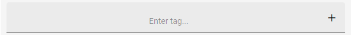
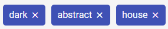
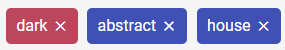

A tag is a one-word descriptor matching the resource shown before.
In this view you can see the tagging field. Your goal is to describe the content you have been shown before by inserting tags into the input field at the bottom.

You can seperate your tags either by pressing ENTER, SPACE or the

Entering a tag multiple times is automatically prevented. It will shortly light up in red in the field of tags you have already entered:

By pressing the
Once you are done with your selection of tags you can press the "next" button on the bottom to continue. You cannot go back to edit your tags again.